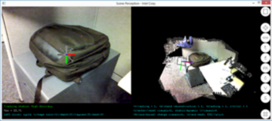
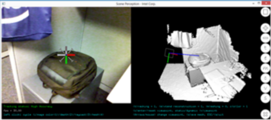
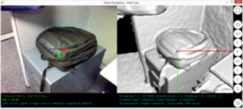
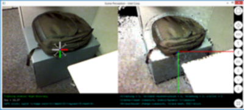

Scene Perception |
Top Previous Next |
|
The SDK Scene Perception module creates a digital representation of the observed environment and estimates in real-time the camera pose. The camera pose estimation is also called localization or tracking and the creation of the digital representation of the observed environment is also called reconstruction. The module is optimized for Augmented Reality applications where computer graphic elements (virtual content) can be seamlessly added to the live camera view. The occlusions of the augmentations by real objects can be correctly handled thanks to the live and dense reconstruction of the surrounding environment. Also physics/lighting simulation can be used together with the reconstruction to increase the realism of the experience. The estimated motion by the module is scaled which enables metric measurements of the scene. See Figure 65 for a scene perception sample. The live color image is on the left and the densely reconstructed environment is on the right as a textured mesh. The estimated camera pose is represented as a square and its associated coordinate system.  Figure 65: Live Color (Left) Densely Reconstructed Environment (Right) The camera pose consists of 6 degrees of freedom: 3 for the rotation/orientation and 3 for the translation/position. It is estimated in real-time, i.e. at the camera capture rate. The digital representation of the environment is dense as opposed to sparse or point cloud. It can either be a voxel representation of the volume space or a mesh representation of the surface or a projected view of the volume space. Figure 65 and Figure 66 show examples of different representations.  Figure 66: Densely Reconstructed Environment as a Projected View of the Volume. The camera motion is supposed to be smooth as the camera is hand-held by the user and moved in a natural and gentle way. Fast and sudden motion might result in a decrease of the tracking quality and might trigger a re-localization. The observed environment is assumed to be containing some visual texture and/or having some 3D structure. The tracking would not work correctly if the observed environment does not have enough geometrical variations or when it is uniform or does not have texture: this happens when the camera's field of view is only containing a flat surface such as a wall, a floor or an empty table. The Scene Perception module relies mostly on what is visible in the depth image. This means when the fill rate of the depth image is low, the tracking does not work correctly. The user needs to take into consideration the depth camera properties. In most cases, the user is assumed to point the camera towards a scene that is within the camera working range. The user provides the system with the volume resolution depending on the use case and the environment scale size. For large scale environment, e.g. a room-sized environment, low resolution would provide best tracking results. For small scale environments, e.g. object-sized, high resolution would provide most accurate reconstruction. Figure 67 shows reconstruction at the low resolution setting.  Figure 67: The Reconstructed Volume Viewed From the Same Viewpoint as The Camera Current Pose.
|